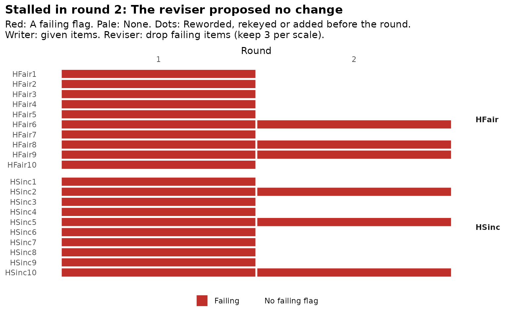

Revising items in a loop: Write, answer, check, revise
Source:vignettes/articles/revision-loop.Rmd
revision-loop.RmdCan a language model write a scale, see how synthetic respondents
answer it, and revise it until it looks polished? And if so, after how
many rounds, and do its revisions follow the evidence?
revision_loop() runs that experiment and logs every step,
so the questions can be answered from data.
Like the pretest, this is pilot screening, not validation. Items that look polished to synthetic respondents still need a field test with people. If the same model family writes and answers the items, “polished” may only mean “easy for language models to agree with”, so cross the writer and respondent models and check the final items in a small real sample.
The loop
Each round has four steps:
-
Answer. Synthetic respondents answer the current
items (
generate_synthetic()). -
IRT checks.
loop_irt()fits the partial credit model to each scale with mirt and flags items with infit or outfit mean squares outside 0.6 to 1.4, S-X2 misfit, disordered thresholds, local dependence (Q3) and items nobody varies on.loop_irt("gpcm")andloop_irt("graded")fit models with a slope per item and flag low slopes instead. -
Data quality.
loop_checker()runs the item analysis ofsynthetic_pretest()(weak items, keys that run against the scale, items closer to another scale, near-duplicates) and screens the respondents for straight-lining, ignored keys and skipped items. -
Stop or revise.
loop_criterion()decides whether the items are polished. If they are not, a reviser proposes edits (reword, rekey, drop, add or keep), and the next round starts with the edited items.
The loop stops when the criterion passes, when
max_rounds is reached, when the reviser proposes no change,
or when a step fails. The first items come from you (items)
or from a writer (loop_writer_llm()).
Decide what “polished” means first
Set the stopping rule before the first run, so that the number of rounds means something. The default asks for no item with a failing flag, alpha of at least 0.80 in every scale, at least 90% of items closest to their own scale, at most 5% unusable respondents and at least three items per scale:
library(synthcheck)
loop_criterion()
#> function (flags, stats, items, context)
#> {
#> rows <- list()
#> add <- function(name, value, target, pass) rows[[length(rows) +
#> 1L]] <<- data.frame(criterion = name, value = value,
#> target = target, pass = pass, stringsAsFactors = FALSE)
#> if (no_failing_items) {
#> n <- length(unique(flags$item[flags$severity == "fail" &
#> !is.na(flags$item)]))
#> add("no_failing_items", n, 0, n == 0)
#> }
#> for (s in names(min)) {
#> v <- stats$value[stats$stat == s]
#> v <- if (length(v) && any(!is.na(v)))
#> min(v, na.rm = TRUE)
#> else NA_real_
#> add(paste0("min_", s), v, min[[s]], !is.na(v) && v >=
#> min[[s]])
#> }
#> for (s in names(max)) {
#> v <- stats$value[stats$stat == s]
#> v <- if (length(v) && any(!is.na(v)))
#> max(v, na.rm = TRUE)
#> else NA_real_
#> add(paste0("max_", s), v, max[[s]], !is.na(v) && v <=
#> max[[s]])
#> }
#> con <- context$construct
#> if (!is.null(min_items)) {
#> sc <- unique(c(names(con$scales), items$scale))
#> n <- min(table(factor(items$scale, levels = sc)))
#> add("min_items", n, min_items, n >= min_items)
#> }
#> if (!is.null(min_total))
#> add("min_total", nrow(items), min_total, nrow(items) >=
#> min_total)
#> if (factors) {
#> v <- stats$value[stats$stat == "n_factors_all"][1]
#> k <- if (isTRUE(con$single_scale))
#> 1L
#> else length(unique(items$scale))
#> add("factors", v, k, !is.na(v) && v == k)
#> }
#> if (!length(rows))
#> return(NULL)
#> do.call(rbind, rows)
#> }
#> <bytecode: 0x61ffacaa9428>
#> <environment: 0x61ffaca9f6c8>
#> attr(,"label")
#> [1] "no failing items; alpha >= 0.8; own_scale >= 0.9; careless_share <= 0.05; at least 3 items per scale"Any stat a step reports can be a target, for example the marginal
reliability from loop_irt():
crit <- loop_criterion(min = list(alpha = 0.8, own_scale = 0.9, marginal_rxx = 0.8),
factors = TRUE)A first run
The mock provider answers at random, so every item fails. That makes
it a quick way to see the loop and its log without calling a model. Here
the rules-based reviser loop_reviser_drop() drops failing
items until each scale is down to three:
h <- hexaco_items[hexaco_items$facet %in% c("HSinc", "HFair"), ]
h$scale <- h$facet
con <- loop_construct("Honesty-Humility", "Sincerity and fairness in dealing with others.",
scales = c(HSinc = "Sincerity", HFair = "Fairness"), scale = c(1, 7))
run <- revision_loop(con, h, sc_model("mock"), respondents = 60, max_rounds = 4,
checker = loop_checker(n_pa = 5), cache = FALSE)
run
#> Item-revision loop "Honesty_Humility-seed1": stalled after 2 rounds
#> Writer: given items
#> Evaluator: mirt partial credit model (infit and outfit, threshold order, S-X2, Q3, information)
#> Checker: synthcheck data quality (pretest and respondent screening)
#> Reviser: drop failing items (keep 3 per scale)
#> Stopping rule: no failing items; alpha >= 0.8; own_scale >= 0.9; careless_share <= 0.05; at least 3 items per scale
#>
#> round n_items n_failing n_passed n_criteria stop
#> 1 20 20 2 5 <NA>
#> 2 6 6 2 5 stalled
#>
#> Edits: 14 drop.
#>
#> The tables `rounds`, `items`, `flags`, `stats`, `criteria` and `edits` hold the log;
#> see loop_log_schema().
gg_loop(run)
A run with language models
The target instrument is a new scale of financial
well-being, built on the definition of the Consumer Financial
Protection Bureau (2015). Its four elements are the scales: Control over
day-to-day finances, a cushion against financial shocks, being on track
to meet financial goals, and the freedom to make choices that let one
enjoy life. loop_builtin_construct() has it ready:
fwb <- loop_builtin_construct("financial_wellbeing", n_per_scale = 8,
population = "adults in Canada")
fwb
#> Construct "Financial well-being": 4 scales, 8 items each, answers 1 to 5.
#> A state in which a person can fully meet current and ongoing financial obligations, can feel secure in their financial future, and is able to make choices that allow them to enjoy life.
#> control: Having control over one's finances: Being able to pay bills on time, not having unmanageable debt, and being able to make ends meet.
#> cushion: Having a financial cushion against unexpected expenses and emergencies: Savings, health insurance and good credit, and being able to rely on friends and family for financial help, which increase the capacity to absorb a financial shock.
#> goals: Having financial goals, such as paying off student loans within a certain number of years or saving a particular amount toward retirement, and being on track to meet them.
#> freedom: Being able to make choices that allow one to enjoy life, such as taking a vacation, enjoying a meal out now and then, going back to school for an advanced degree, or working less to spend more time with family.It carries its own stopping rule: The defaults plus a marginal reliability of at least 0.80 in every scale and four dimensions in parallel analysis.
The four elements can also be content domains of one financial
well-being score. With single_scale = TRUE, items are still
written and revised domain by domain, but the checks treat all items as
one scale. The stopping rule then asks for one dimension, at least 10
items in all, and at least one item left in every domain, which is
evidence of content coverage:
fwb1 <- loop_builtin_construct("financial_wellbeing", single_scale = TRUE)
attr(fwb1$criterion, "label")
#> [1] "no failing items; alpha >= 0.8; marginal_rxx >= 0.8; careless_share <= 0.05; at least 1 items per scale; at least 10 items in all; dimensions match scales"Give the reviser the same limits, so that it cannot drop the last
item of a domain:
loop_reviser_llm(author, min_items = 1, min_total = 10).
In a real run, one model writes and revises the items and another answers them:
author <- sc_model("openai", "gpt-4.1-mini")
run <- revision_loop(fwb, models = sc_model("anthropic"), respondents = 200,
writer = loop_writer_llm(author), reviser = loop_reviser_llm(author),
max_rounds = 15, parallel = 10,
output = "loops/fwb/openai-writes_claude-answers/seed1", seed = 1)See what a round of respondents costs first with
estimate_cost(). The response cache
(sc_cache()) makes a repeated run free.
What the log records
Every run writes seven tables, which loop_log_schema()
documents column by column:
unique(loop_log_schema()$table)
#> [1] "runs" "rounds" "items" "flags" "stats" "criteria" "edits"
loop_log_schema("edits")[, c("column", "description")]
#> # A tibble: 16 × 2
#> column description
#> <chr> <chr>
#> 1 run_id Name of the run.
#> 2 round Round whose checks prompted the edit; it takes effect in the n…
#> 3 item Item edited (the new name for an added item).
#> 4 action reword, rekey, drop, add or keep.
#> 5 old_statement Wording before the edit.
#> 6 new_statement Wording after the edit.
#> 7 old_reverse Key before the edit.
#> 8 new_reverse Key after the edit.
#> 9 scale Scale of the item.
#> 10 rationale Why the reviser made the edit.
#> 11 cites Checks the edit responds to, separated by commas.
#> 12 cites_flagged Were all cited checks flagged on this item in this round? NA w…
#> 13 resolved Are the cited checks (or, with none cited, all failing checks)…
#> 14 similarity Word overlap (Jaccard) of the old and new wording, 1 for no ch…
#> 15 applied Was the edit applied? FALSE for unknown items or a second edit…
#> 16 note Why an edit was not applied.-
runs: The settings, the step labels, the writer’s note and the final status. -
rounds: Per round, the number of items, failing items and passed criteria, the cost and tokens, and the reviser’s note on the round. -
items: Every item in every round, with its wording, version and flags. -
flagsandstats: Every flag and statistic, from each step. -
criteria: Every part of the stopping rule in every round. -
edits: Every edit, with its rationale, the checks it cites, whether those checks were in fact flagged (cites_flagged), whether they were gone in the next round (resolved) and how much of the wording changed (similarity).
The last table carries the reasoning questions.
cites_flagged asks whether the stated rationale matches the
evidence. resolved asks whether the fix worked. An edit
that resolved its check, followed by the same check on the same item a
few rounds later, is oscillation. A falling similarity
across rounds is drift away from the starting wording, and a rising
alpha together with near-duplicate flags is a sign of items converging
on the same bland statement.
Running an experiment
One run is an anecdote. A design crosses the factors that matter, with several replications (seeds) per cell:
- the construct (a new one, such as financial well-being, against an established one with known items, such as HEXACO facets),
- the writer and reviser model,
- the respondent model (the same family as the writer, or a different one),
- the reviser (a language model against
loop_reviser_drop(), which shows how far deletion alone gets), - the persona mix.
Give each run its own folder and run_id, then read them
all back:
design <- expand.grid(author = c("openai", "anthropic"), respondent = c("openai", "anthropic"),
seed = 1:5, stringsAsFactors = FALSE)
for (i in seq_len(nrow(design))) {
d <- design[i, ]
author <- sc_model(d$author)
id <- sprintf("%s-writes_%s-answers_seed%d", d$author, d$respondent, d$seed)
revision_loop(fwb, models = sc_model(d$respondent), respondents = 200,
writer = loop_writer_llm(author), reviser = loop_reviser_llm(author),
max_rounds = 15, parallel = 10, output = file.path("loops", id), run_id = id, seed = d$seed)
}
runs <- read_loop("loops")loop_outcomes() gives one row per run: The round in
which the items were polished, the edits by action, the share of edits
that cited flagged checks and that resolved them, relapses, wording
drift and cost. Join it with the design to compare cells:
loop_outcomes(run)
#> # A tibble: 1 × 18
#> run_id status rounds rounds_to_polish items_start items_end failing_start
#> <chr> <chr> <int> <int> <int> <int> <int>
#> 1 Honesty_Hu… stall… 2 NA 20 6 20
#> # ℹ 11 more variables: failing_end <int>, edits <int>, reworded <int>,
#> # rekeyed <int>, dropped <int>, added <int>, cites_flagged <dbl>,
#> # resolved <dbl>, relapsed <dbl>, similarity <dbl>, cost <dbl>Finally, give the final items of a few runs to a small sample of
people and compare them with authenticity_benchmark() and
synthetic_pretest() on the real answers. That is the only
way to tell whether synthetic polish carries over to people.